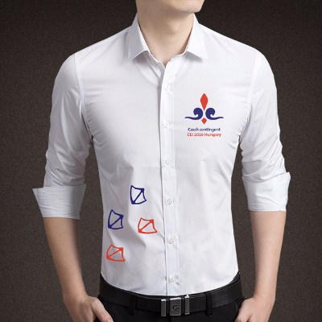
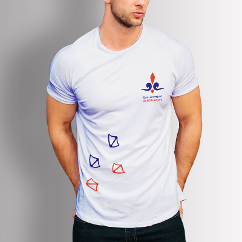
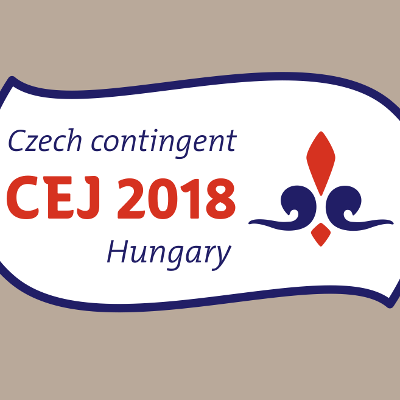
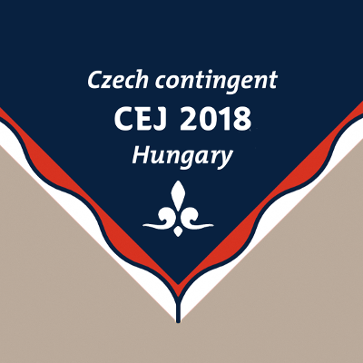

Central European Jamboree 2018
Scouting on new waves!
Registrace je uzavřena, děkujeme!

Infomace o CEJ 2018
Středoevropské jamboree je zahraniční akce pořádaná jednou za dva roky, na kterou se sjíždí skauti z celé střední Evropy. V organizování této akce se vždy střídají země Visegrádské čtyřky, tedy Česká republika, Polsko, Maďarsko a Slovensko.
Další Středoevropské jamboree se bude konat právě v Maďarsku v kempu
Szalki-sziget, Dunaújváros
a to v termínu:
28.7. – 4.8. 2018
Na tuto velkou akci přijíždí skautky a skauti v patrolách, které se skládají z jednoho dospělého vedoucího a devíti účastníků ve věku 14-17 let.
Pokud však nechceš jet jako vedoucí patroly a je ti více jak 18, můžeš se přihlásit do International Service Team (IST) a pomáhat samotným organizátorům Jamboree vytvořit ten nejlepší zážitek pro účastníky!

Program
Letošní programové motto je:
Scouting on new waves!
Můžeš se těšit na ceremoniály, které se konají vždy na začátku a na konci akce a jejichž cílem je všechny přivítat a zahájit akci, či se rozloučit a společně akci ukončit.
International Day
Každá země, která se Jamboree účastní, má za úkol představit svou kulturu jiným zemím a na mnoho dalších skvělých aktivit, které si pro tebe organizátoři připraví!
Czech party
Jakožto největší kontingent na CEJ bychom mohli ukázat, že se dokážeme bavit a zvládneme připravit velkou zábavu pro celé Jamboree! Bude mít dané téma, jídlo a super playlist s DJ!

Praktické informace
Podrobnější informace majdete i ve svých mailových schránkách!
Patrola
Odjezd na akci pro kompletní patroly je v sobotu 28.7. v 10:30 pouze z Brna od Janáčkova divadla. Odjezd bude v sobotu 4.8. kolem poledne a čas příjezdu zatím není finálně určený. Pojede se opět jen do Brna. Doplatek za dopravu je 150,- Kč za osobu, za celou patrolu tedy 1500,- Kč.
IST - International Service Team
Odjezd na akci je v pátek 27.7. v 8:00 z Prahy od Hlavního nádraží, 11:30 z Brna od Janáčkova divadla nebo 13:00 z Bratislavy. Příjezd bude 5.8. v neděli přes Bratislavu, Brno až do Prahy. Doplatek za dopravu je 150,- Kč.
Nezapomeňte sebou: baterku, powerbanku, hodinky nebo jiné měření času, láhev na vodu, batůžek/tašku přes rameno a plyšáka!
Kontingentní předměty
Letos byl výběr mezi kontingetním tričkem a nebo košilí! Dále každý účastník i IST dostane šátek, nášivku a další věci si může doobjednat přes JUN shop (podrobnosti již brzo).
Košile
Tričko
Nášivka
Šátek

FAQ
Má patrola nějaké speciální místo na ubytování?
Ano, má. Těmto místům se říká „subcampy“ a v jednom bydlí přibližně 10 patrol.
Kde se odehrává program?
Program má na Jamboree svoje samostatné území, které je pro to speciálně vybaveno. Některé programy však probíhají i mimo tábořiště.
Jak je to na Jamboree s jídlem?
Stravu zajišťují samotní organizátoři, takže si sami vařit nemusíte. Jídlo dostanete 3x denně a můžete si vybrat, zda dáte přednost general stravě, vegetariánské, či veganské, nebo úplně nějaké jiné. Pozor se dává i na alergie a diety.
Je nutné, aby byla patrola plně obsazena?
Ano, je. Pokud vám nějací členové chybí do plného počtu, napište nám na náš mail cej2018@skaut.cz a my vám zkusíme nějaké členy bez patroly přidělit.
Co když nemám patrolu, ale moc ráda bych jel/a?
Zkus nám napsat na mail a zkusíme ti nějakou patrolu najít. ;)
Co když mám v oddíle skautku/skauta, kterému je 13 let?
Pokud si myslíš, že zvládne komunikovat v angličtině a je dostatečně dospělý na to, aby si to užil, tak nám napiš a domluvíme se individuálně. ;)

Registrace
Patrola
Pro registraci Patroly je potřeba devět účastníků (14 až 17 let) a jeden Patrol Leader nad 18 let včetně. Pro účastníky je Středoevropské jamboree přímo určené a můžeme ti zaručit, že si ho naplno užiješ! Jako Patrol Leader si program zažiješ stejně jako účastníci (:
International Service Team
Členové International Service Teamu (IST) si jedou Jamboree užít trochu z jiného úhlu pohledu – z toho organizátorského. Pokud je ti více jak osmnáct let a nebojíš se práce s přibližně šestihodinovou denní pracovní dobou, tak se k nám rozhodně přidej!
Cena
Účastnický poplatek pro účastníka českého kontingentu činí 5 700 Kč, pro IST 2 900 Kč. Náklady na dopravu budou z 80% hrazeny z účastníckého poplatku, bude se dovybírat 150,- Kč.
Registrace je již uzavřena!
Kontakty
V případě jakýkoliv dotazů se obrať na email
cej2018@skaut.czUž jsi nám dal like na Facebooku? Na naší facebookové stránce se dozvíš všechno, co se aktuálně u nás v kontingentu děje a vše, co potřebuješ vědět.
facebook.com/CEJ2018czNezapomeň nás také sledovat na Instagramu, kde sdílíme fotky z akce a třeba budeme sdílet i ty tvoje! 😊 Náš vlastní hashtag Českého kontingentu je
#cej2018cz
Tým
Vendy
šéfka
Sunny
finance

Lung
registrace
Twiggi
propagace

Biff
logistika
Piškot
komunikace
Malíček
International Day
Bludička
fotografka

CEJ news
Přečti si aktuality, které jsme pro CEJ 2018 vydali (PDF):